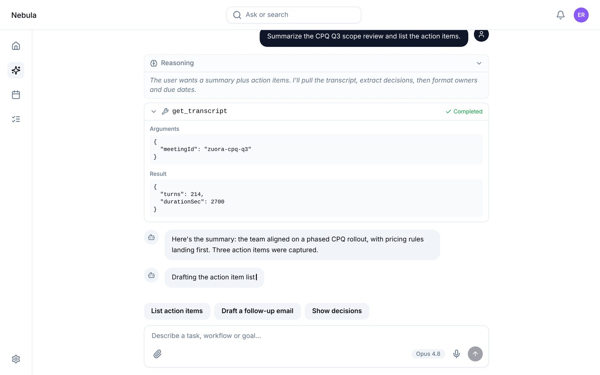
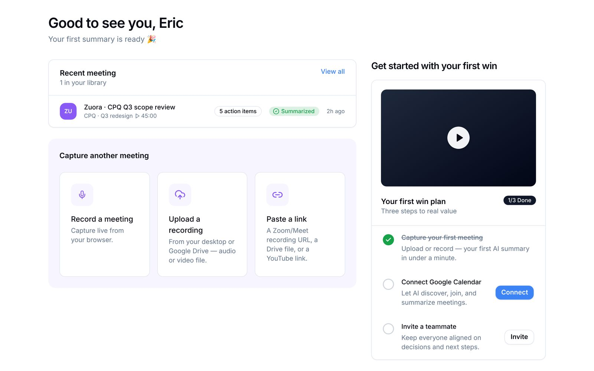

← Selected work / 03
Nucleux
Building blocks for interfaces where the other side of the conversation is an AI agent.
48
components, each its own npm package, plus an umbrella that has them all
×529
Button instances in the Figma file. Usage counts like this set the build order
104
render, accessibility and interaction tests when the library split into packages
6
MCP tools that let coding agents search the library and read its real props

The problem
General UI kits give you buttons and dialogs. Agent interfaces need things they don't ship: a thread, text that streams in, a visible tool call, a reasoning trace, a consent step.
Intelligaia's designers had already worked these patterns out in a large Figma file of AI interaction patterns. What was missing was the code: components that match the design exactly, that a team can install one at a time, and that hold up when they're assembled by an AI coding assistant rather than by hand.
That last part shaped more of the project than anything else. If agents are going to build with the library, they need to see its real API, not guess it from training data.
From Figma to npm
Every component goes through the same six steps.
-
1
Read the design
Pull the frame's structure and variables straight from Figma, and map each design variable to a
--nx-*token. Hex values never appear in components. -
2
Resolve to the master
Match every instance to its master component and recover its full set of variants, rather than copying how one screen happens to look.
-
3
Primitives, then screens
Split each screen into reusable primitives and compose the screen back from them. Six full example compositions, such as an agent chat and a meeting dashboard, ship with the library.
-
4
One package each
Each component lives in its own
@nucleux/<name>package with its props type and a story. The@nucleux/reactumbrella re-exports all of them. -
5
Prove it
One command runs typecheck, then render, accessibility and interaction tests, then the package build, then the Storybook build. A component isn't done until all four pass.
-
6
Publish, then describe
Packages publish to npm. A catalog generated from the packages themselves goes into the MCP server, so the docs agents read can't drift from the code.
Decisions worth explaining
A component library is mostly decisions about what not to trust: a screenshot's pixels, a bundler's defaults, an agent's memory.
- The master component wins over the screen. The first Button was built from one screen's pixels and came out subtly wrong. It was rebuilt against the canonical component (colour, border, radius, weight, letter-spacing). That rule went into the harness: never trust screenshot pixels over the component definition.
- Build what's used most, first. Instance counts across the whole Figma file set the order: Button ×529, Card Container ×179, Icon Button ×174, Badge ×74. The pieces that appear on every screen got built and tested before the rare ones.
- Install everything, or one thing. Teams can add the whole kit or a single component. Inside the repo, every package resolves to source, so tests and Storybook run without building anything first.
- Safe for Server Components. React packages need a
"use client"line, but the bundler strips it during the build. So a post-build step adds it back, only to packages that depend on React. Tokens and utilities stay importable from server code. - Themes are variables, not forks. Every colour reads from an
--nx-*CSS variable through a Tailwind preset. Changing one variable rebrands everything, and dark mode is a single class. - Docs that agents can't misread. The MCP server answers from a catalog generated at build time: descriptions, exports, verbatim props, install lines and full examples. Adding it to Claude Code, Cursor or Windsurf takes one line.
- AI-assisted, with guardrails. The library was built with an AI pair. The Figma-to-component process and the validation gate are written down as reusable skills, so every new component follows the same steps and passes the same checks.
What's in the box
Agent and chat
Thread, Message, InputBar, AgentComposer, StreamingText, TypingIndicator, ToolCall, Reasoning, CodeBlock, Suggestions, FollowUp
Consent and forms
ModularConsent, RichCheckboxGroup, Checkbox, RadioGroup, Switch, Select, SearchInput
Structure and patterns
GlobalNav, Sidebar, NavPanel, Tabs, Menu, Breadcrumb, Dialog, Sheet, Popover, Toast, Table, MediaCard, ActionTile, Checklist, PageHeader, and the basics: Button, Badge, Chip, Avatar, Alert, Tooltip, Progress, Accordion

Where it stands
- It's still pre-1.0 (the packages are at 0.4). APIs can still change between minor versions.
- The companion pattern-library website, which documents when and why to use each pattern, is a separate Intelligaia project built mostly by colleagues.